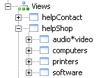

parent nodes: Intro5Indexing | Intro6Signalling | PageSignalling | SignalPageNodes | SignalTodoTags | WpAttributes
Signal User Tags
Contents:
Back
General
A tag is an attribute, that can be attached to a page, in order to signal it as:having a particular statushaving a particular contentbelonging to a particular groupetc.
These tags form an additional way to group and index pages, in order to get quick access to them or e.g. obtain a group overview. Tags can be attached to any page, any page can have multiple tags and any tag can be attached to multiple pages. Tags can also have any name and any meaning, so their application is limitless. The only thing that restricts their use, is that no names can be used, that are reserved for use as Wikidpad attributes like: html, icon, color, bold, priority, tree_position, etc.
Any tag appears as a separate node in the "views" section of the main tree and underneath that node is the list of all the pages that have that tag assigned as an attribute. Also global node formatting can be used, in order to signal page nodes in the page tree as having one or more particular tags.
Top
Format
A tag has the following format: [name: value]; it in fact is an attribute, with a user defined name and value. The name acts as the tag key and can be anything, as long as it's alphanumeric and does not contain any special characters that serve as Wikidpad tags and/or delimiters. The value can also be anything and can even contain special characters, if it is enclosed in quotation characters. Examples:
[helpContact: private][helpContact: office][helpShop: "audio*video"]
These attributes add a node "helpContact" with the sub nodes "private" and "office" to the views tree as well as a node "helpShop" with a sub node "audio*video. All three sub nodes have this page as a child node. Normally they probably wouldn't, but this is for demonstrations sake.
The colon is mandatory; without it the attribute is interpreted as a link. So there can't be a tag with only a name or value, like [help]; there cán however be a tag with an empty value, like this:
This adds an node "help" to the views tree and a sub node with no name but wíth this page as a child.
Multiple values can be defined for the same tag name, by separating them with a semicolon. This example adds three more tag values to the helpShop tag for this page:[helpShop: computers; printers; software]

Top
Structured tag names
Tags can be nested; they can have a hierarchy of their own, using structured names. This is usefull, since it helps preventing the views tree from becomming an entirely too long list of tag attributes. Using this technique, the earlier examples could have been written as[help.contact: private; office][help.shop: "audio*video"]
This would have created 1 node "help" in the views tree, with the sub nodes "contact" and "shop", each with their own sub nodes.
It does not only help in keeping the number of nodes in views smaller, but also helps keeping the tag names shorter. If the private contacts would have to be extended with "family", "friends", etc, this would produce tagnames like: (help)contactPrivate and contactOffice. Using nesting they would become: "help.contact.private: family" and "help.contact.private: friends". Giving nice short node names, that easier fit in the not too wide views window. Adding the attributes below to this pages, would give a result as in the screenprint.[help.contact.private: family][help.contact.private: friends][help.contact.office: project][help.contact.office: department]
And last but certainly not least: it allows to group pages into one or more categories and does not need the invention of all sorts of structured camelcasewords - like HelpContactPrivateFamilyInlaws - to make that possible.
When working wist nested or "structured" tags, be aware that:[help.contact: private] and[help.contact.private: family]
do nót represent the same node "private" in the views tree. The first "private" is a tag value and the second is a "node" in the structured tag name.
Top
Page signalling
Tags have global attributes, that allow to have nodes of pages, that have certain tags or belong to certain tag groups, to stand out in the page tree and/or be signalled in some way. The node properties that can be influenced are: icon, color and font style bold.[tag name.icon: icon name][tag name.color: color name][tag name.bold: true/false]
As an example: the global attributes:[global.help.contact.icon: people][global.help.contact.color: coral][global.help.contact.bold: true]
would set the node name of any page in the wiki, that has a tag from the group: "help.contact" to bold and orange and it's icon to "people".
The additional global attributes:[global.help.contact.private.icon:man][global.help.contact.private.color:navy][global.help.contact.private.bold:false]
would overrule the settings for contacts, for any page that has a "help.contact.private" tag.
The availability of this signalling facility is important, but that is only a relative importance and it has to be used wisely, since:In a tree full of colored and iconed nodes nothing realy stands out anymore.A node can only have 1 icon, color and bold setting, not several; if a page belongs to two or more tag groups with different signal formatting, then it's node can't have all the formatting at the same time.It has a negative effect on performance.
Top
Remarks
Top
previous: Back
parents: Intro5Indexing, Intro6Signalling, PageSignalling, SignalPageNodes, SignalTodoTags, WpAttributes
[help.status: done]